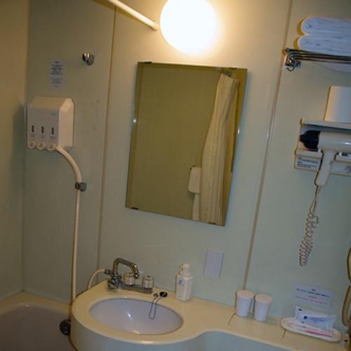

T01 · 洗手液放回洗手顺手的位置
Addcomponentwise

destination
Complex-Edit · 4 · 500 × 500
Add the kind of soap pump I usually buy, where I keep the hand soap.
加一个我常买的那种皂液器，放在我平时洗手取用的位置。
Add a small matte-ceramic pump soap dispenser on the free counter strip to the right of the sink basin.
在水槽右侧空台面加一个小号哑光陶瓷泵头皂液器。
匹配：普通家庭洗手场景，非职业强匹配。
核查：Use a small footprint on the counter; do not put the dispenser in the basin or replace existing bottles.
参数绑定 · 2 个参数
| 操作 / 参数 | 个性化表达 | 明确值 / Profile 依据 |
|---|---|---|
| P01 Add Entity / reference_entity | the kind of soap pump I usually buy General Entity | {
"category": "SoapDispenser",
"body_material": "matte_ceramic"
}A_SOAP_BODY |
| P02 Add Placement / destination | where I keep the hand soap | {
"relation": "right_of",
"anchor": "sink basin",
"support": "free right-hand counter strip"
}S_SOAP_HANDWASH |
来源、改写和保留要求
Introduce a soap dispenser onto the sink counter.
保留加皂液器的原意，明确材质和右侧可用台面；不执行原序列其他步骤。
{
"source": {
"benchmark": "Complex-Edit",
"dataset": "UCSC-VLAA/Complex-Edit",
"revision": "b0b8a81d740ae413d52572281a23dc975c4b4b91",
"split": "test_real",
"sample_id": "4",
"image_field": "image",
"asset_access": "Hugging Face dataset viewer cached image; stored bytes retained without editing",
"url": "https://huggingface.co/datasets/UCSC-VLAA/Complex-Edit/tree/b0b8a81d740ae413d52572281a23dc975c4b4b91",
"original_instruction": "Introduce a soap dispenser onto the sink counter.",
"native_label": [
"Add an Object"
],
"selected_sequence_indices_zero_based": [
3
],
"original_sequence": [
{
"name": "Add an Object",
"instruction": "Place a bouquet of flowers near the sink."
},
{
"name": "Replace an Object",
"instruction": "Replace the bathroom light with a decorative chandelier."
},
{
"name": "Change Background",
"instruction": "Replace the plain wall with patterned ceramic tiles."
},
{
"name": "Add an Object",
"instruction": "Introduce a soap dispenser onto the sink counter."
},
{
"name": "Change Texture",
"instruction": "Update the mirror border to a golden frame."
},
{
"name": "Add Text",
"instruction": "Add small instructions near the towel rack."
},
{
"name": "Apply Filter/Weather",
"instruction": "Apply a warm lighting filter."
},
{
"name": "Resize an Object",
"instruction": "Slightly enlarge the visible imaging mirror to enhance reflections."
}
],
"preceding_steps_applied": false,
"dependency_review": "Selected objects and spatial anchors are visible in the original source. No preceding sequence steps are applied or required; task-specific visual review records exclusions."
},
"preservation_constraints": [
"Keep basin, mirror, towel, taps and existing bottles unchanged."
],
"visual_review": {
"status": "source_visually_checked_draft",
"check": "Use a small footprint on the counter; do not put the dispenser in the basin or replace existing bottles."
}
}